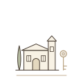
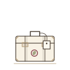

Pro ty, kdo mají v Itálii domov
Dům, byt, vinice. Chcete se domluvit se sousedem, správcem i řemeslníkem a cítit se tam doma, ne jako host. Projdeme přesně ty rozhovory, které vás čekají.
Lekce
Tempo, témata i cíle přizpůsobím vám a tomu, v jakých situacích se chcete v Itálii domluvit. Každá lekce je individuální a trvá 45 minut.
Pro koho
Provázím vás od prvních slov až po sebejistou konverzaci (A1–B1+).

Dům, byt, vinice. Chcete se domluvit se sousedem, správcem i řemeslníkem a cítit se tam doma, ne jako host. Projdeme přesně ty rozhovory, které vás čekají.

Jezdíte často a chcete si sebejistě objednat v restauraci, popovídat si s majitelem vinařství, rozumět tomu, co se kolem vás říká.

Italština jako rituál: chvíle, která patří jen vám a radosti z jazyka. Pravidelný kousek Itálie.
Jak lekce probíhají
Věřím, že jazyk se nejlépe učí v klidu a s radostí.
Prvních deset minut věnujeme naladění na italštinu: italsky probereme, jak se máte a co je nového. Mezitím se nenápadně vracíme k minulému setkání, aby se nové věty usadily a vybavily samy, až je v Itálii budete potřebovat.
Dalších pětadvacet minut patří nové látce. Začínáme od základů, na kterých postupně stavíme věty pro situace, které v Itálii opravdu využijete. Od vína přes objednávky v restauraci až po domluvu s řemeslníkem nebo s italskými přáteli. Gramatika přijde sama tam, kde ji potřebujeme. Mluvíte vy a právě tím, že jazyk používáte, získáváte jistotu.
Posledních deset minut si společně projdeme, kde jsme se zadrhli. Chyby patří k učení jazyka a vedou k větší jistotě v mluvení. Shrneme si, co jsme probrali, a povíme si, co nás čeká příště. Pokud budete mít zájem, mohu vám nabídnout drobné zadání – minirituál italštiny mezi lekcemi.
Forma výuky
Lekce probíhají online formou videohovoru – z domova, z dovolené nebo přímo z vašeho domu v Itálii. Stačí odkaz, žádná instalace.
Časté otázky
Pro dospělé, kteří se chtějí v italštině domluvit v běžném životě – zejména pro majitele nemovitostí v Itálii a ty, kdo tam často jezdí. Provázím vás od prvních slov až po sebejistou konverzaci (A1–B1+).
Ne. Začínáme tam, kde jste, a postupujeme v tempu, které vám vyhovuje.
Trvá patnáct minut, je bez poplatku a bez závazku. Seznámíme se, ujasníme si vaše cíle a úroveň a společně navrhneme, jak budou naše setkání vypadat.
Lekce probíhají online formou videohovoru přes Google Meet, případně jiný nástroj po domluvě. Stačí odkaz, žádná instalace.
Rozhodně. Můžeme projít zprávu řemeslníkovi, domluvu se sousedem nebo cokoli, co právě v Itálii řešíte.
Vycházím z moderních učebnic (Dieci, Nuovo Espresso) a připravuji vlastní podklady podle vašich potřeb. Učebnici kupovat nemusíte.
Nejlépe funguje pravidelnost. Ideální jsou dvě lekce týdně, kdy se obvykle dostavují největší posuny a výsledky. Domluvíme se podle vašich možností a času.
Jednotlivá lekce 700 Kč, balíček 5 lekcí 3 200 Kč, balíček 10 lekcí 6 000 Kč. Balíčky se platí předem fakturou, první lekce proběhne po připsání platby. Podrobnosti najdete v ceníku.
Domluvenou lekci lze přesunout, dáte-li vědět nejméně 24 hodin předem. Později zrušená lekce propadá.
Ujasníme si, jaké jsou vaše cíle v italštině. Patnáct minut, bez poplatku a bez závazku.
Nebo napište na ciao@vitalenta.cz. Ozvu se vám co nejdříve.